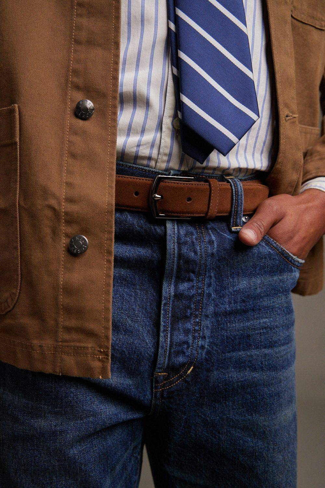

Leading the complete seasonal design process-from trend research to final photography-for 7+ iconic brands
Managing seasonal creative direction for 7+ global heritage brands requires balancing distinct brand identities with cohesive design strategy. Each brand - from Levi's rugged Americana to Calvin Klein's minimalist sophistication - demands authentic expression while maintaining production efficiencies across our portfolio.
My role bridges trend forecasting, design leadership, and cross-brand strategy. I oversee the entire seasonal cycle: from initial color and material research through trend board development, design concepting, tech pack creation, sample review, and final campaign photography. This holistic ownership ensures each season delivers on our commitment to innovation while honoring each brand's heritage and market position.

Each season begins 12-18 months in advance with global trend research. I collaborate with our forecasting partners and in-house research team to identify emerging color, material, and silhouette trends that resonate across multiple brands and market segments.
From there, I synthesize these insights into brand-specific trend boards that provide clear directional guidance to design teams. This isn't just aesthetic direction—it's informed by market data, consumer behavior, and each brand's unique market position and DNA.
Once trend direction is locked, I lead the design development phase. This involves mentoring design teams, reviewing concepts, providing directional feedback, and ensuring each brand's visual strategy is consistently executed across product categories.
I work closely with senior and associate-level designers in our US and international offices, offering real-time feedback that keeps collections on-brand while pushing creative boundaries. The goal is always to elevate each brand's market presence while maintaining production feasibility and cost controls.
Design innovation means nothing if it can't be produced. I work with our technical teams to translate designs into detailed tech packs, ensuring specifications are precise, materials are sourced sustainably, and manufacturing timelines are realistic.
This phase demands collaboration with supply chain, sourcing, and quality teams. I review technical specifications, validate material selections against cost targets, and approve hardware and construction details. The result is a collection that's both visionary and executable.
Sampling is where design meets reality. I oversee the complete sample review process, evaluating first samples against tech pack specifications and design intent. This involves collaborative reviews with product management, marketing, and brand teams to ensure every piece reflects our standards.
Multiple rounds of sampling, refinement, and approval happen here. I provide detailed feedback on fit, finish, construction quality, and brand alignment. The goal is perfection—both aesthetically and functionally—before production.
The final phase brings everything together: campaign photography, brand storytelling, and market activation. I lead creative direction for seasonal shoot campaigns, ensuring photography captures the essence of each brand's design direction while resonating with our target audiences.
From location scouting to art direction, styling, and final image selection, this phase is about translating product and design excellence into compelling market narratives. The result is cohesive seasonal campaigns that drive both wholesale and consumer engagement.

This holistic approach to seasonal creative leadership has yielded measurable results. Over the past three years, I've successfully launched 6+ complete seasonal collections across 7+ heritage brands, each maintaining brand integrity while driving wholesale growth and consumer engagement.
By maintaining consistent quality standards, respecting production timelines, and pushing creative boundaries, these collections have positioned our brands at the forefront of their respective markets. The success of each season depends on the entire team—designers, technical specialists, photographers, and partners—all aligned around a shared creative vision.
Next Case Study
Seasonal Trend Development